class: center, middle # Working with Range Data ## Buffalo Chapter 9 ??? Notes for the _first_ slide! --- # Introduction -- ## Chromosomes and Coordinate Systems: -- * because chromosomes are linear strings of nucleotides, they can be represented with a coordinate system -- * the coordinate system allows us to reference particular regions of a chromosome: * _a gene_ * _an exon_ * _a transposable element_ -- * once genomic datasets are represented as genomic ranges, a series of operations, particularly those involving overlap and proximity, can be carried out --- # Components of a Genomic Range -- ## Three pieces of information are necessary to specify a genomic region: -- * **Chromosome (or scaffold/contig) name**: naming conventions can vary (_e.g.,_ chr4, 4, scaffold_627) -- * **Range**: the start and end site of a genomic region (_e.g.,_ 123,654,834 to 123,654,985) -- * **Strand**: DNA is double-stranded and features can be on the forward (positive) or reverse (negative) strand. Features such as proteins can be strand-specific. -- ## Important Note: Ranges are always tied to a particular version of a genome --- ## An example of genomic ranges: -- <div style="text-align:center">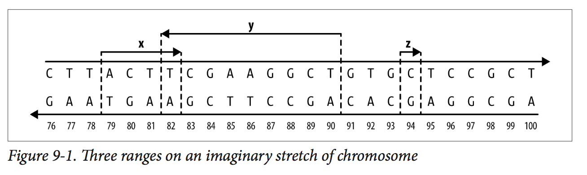</div> --- ## Flavors of range systems: -- * 0-based systems: half-closed, half-open intervals -- * Range width = end - start -- * 1-based systems: closed intervals -- * Range width = end - start + 1 -- <div style="text-align:center">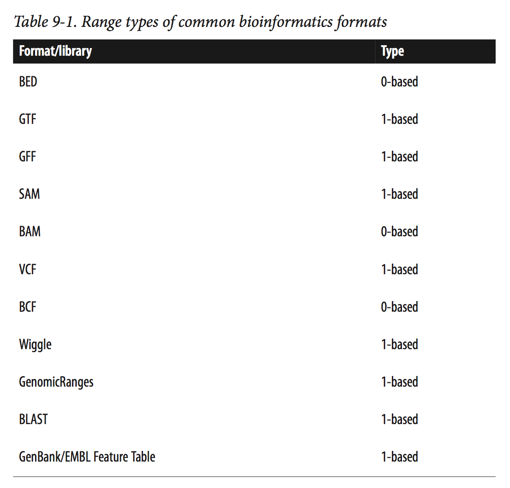</div> --- ## The Buffalo tutorials on genomic ranges use packages from the Bioconductor open source software project: * IRanges * GenomicRanges -- ### To Install Bioconductor's Primary Packages in R: ``` > source("http://bioconductor.org/biocLite.R") > biocLite() ``` -- ### GenomicRanges can be installed with: ``` > biocLite("GenomicRanges") ``` -- ### Bioconductor packages have great documentation: <http://www.bioconductor.org/packages/release/bioc/html/GenomicRanges.html> --- Let's begin working with ranges in the IRanges program which was installed as a dependency of GenomicRanges: ``` > library(IRanges) ``` -- Ranges are created as "IRange Objects" by specifying start and end sites: ``` > rng <- IRanges(start=4, end=13) > rng IRanges of length 1 start end width [1] 4 13 10 ``` -- Is this 1-based or 0-based? -- Now try creating a range by specifying start site and width: ``` rng2 <- IRanges(start=4, width=3) rng2 ``` --- Ranges can also be created using vector arguments: ``` > x <- IRanges(start=c(4, 7, 2, 20), end=c(13, 7, 5, 23)) > x ``` -- And we can give these ranges names: ``` > names(x) <- letters[1:4] > x ``` -- Note that the ranges we create are a special object with class IRanges: ``` > class(x) ``` -- Components of this object can be accessed with start(x), end(x), width(x) -- This can by handy when we want to increment one of these components: ``` > end(x) <- end(x) + 4 > x ``` --- The `range()` function can also be used to inspect the entire length of all ranges in an IRanges object: ``` > range(x) ``` -- We can also take subsets of ranges in an IRanges object using numeric, logical, and character indices -- For example, try the following: ``` > x[2:3] > start(x) < 5 > x[start(x) < 5] > x[width(x) > 8] ``` -- Ranges can also be merged, just as we've done with vectors using the `c()` command: ``` > a <- IRanges(start=7, width=4) > b <- IRanges(start=2, end=5) > c <- c(a, b) > c ``` --- ### Basic Range Operations: -- IRanges objects can be grown or shrunk using arithmetic operations such as +, -, and * (division is not supported since it makes little sense with ranges) -- For example, try: ``` > x <- IRanges(start=c(40, 80), end=c(67, 114)) > x + 4L > x - 10L ``` -- What's going on here? -- <div style="text-align:center">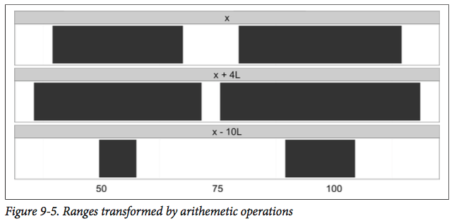</div> --- Sometimes, rather than growing or shrinking ranges, we want to restrict them within particular bounds -- In this situation, the function `restrict()` comes in handy: ``` > y <- IRanges(start=c(4, 6, 10, 12), width=13) > y > restrict(y, 5, 10) ``` -- What's happening here? -- <div style="text-align:center">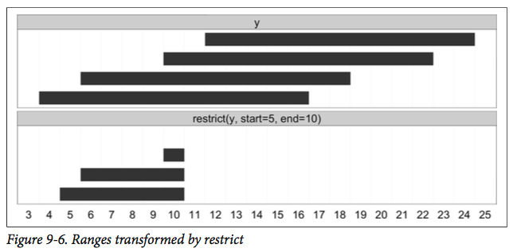</div> --- Perhaps you would like to create entirely new ranges based on their relative position to ranges you already have -- When might this be handy? -- For this application, you would use the `flank()` command: ``` > flank(x, width=7) > flank(x, width=7, start=FALSE) > promoters <- flank(x, width=20) ``` -- And here's a visual representation of these new ranges: <div style="text-align:center">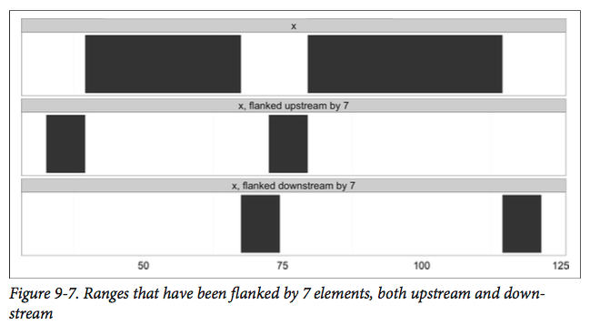</div> --- We may also be interested in collapsing several reads into "super reads" that show the coverage extent of our ranges -- For example, perhaps we have mapped sequence reads to a reference and we would like to see the proportion of genomic coverage -- Let's try a simple example: ``` > set.seed(0) # set the random number generator seed > alns <- IRanges(start=sample(seq_len(50), 20), width=5) > head(alns, 10) ``` -- and now let's collapse these into super reads using the `reduce()` command: ``` > reduce(alns) ``` -- Here's a visual representation of what `reduce()` is doing... --- <div style="text-align:center">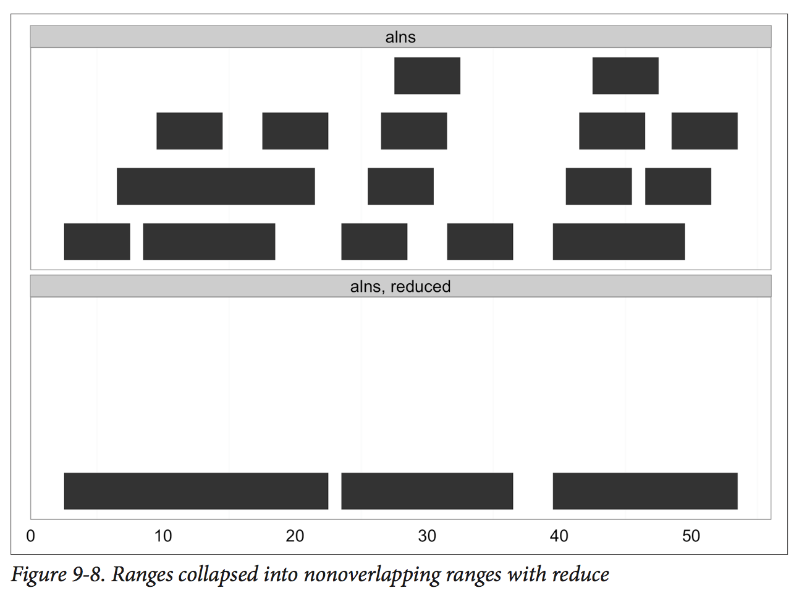</div> --- Rather than extent of coverage, we may be interested in gaps between our ranges -- Here, the `gaps()` command will come in handy: ``` > gaps(alns) ``` -- Which produces new ranges that span gaps in an indicated IRanges object: -- <div style="text-align:center">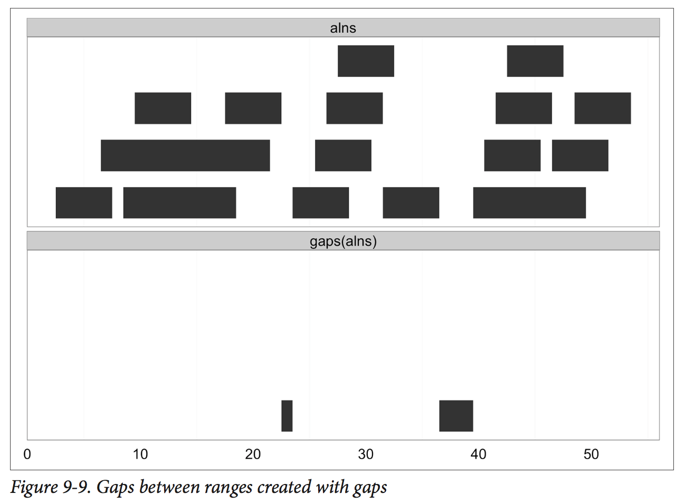</div> --- IRange ranges can also be treated as a set of consecutive integers, so `IRange(start=4, end=7)` would be the integers 4,5,6,7 -- Given this property, we can use various R commands on our IRange objects -- Create the following IRange objects: ``` > a <- IRanges(start=4, end=13) > b <- IRanges(start=12, end=17) ``` -- and see if you can understand how the following R commands can be applied to these objects: `setdiff()`, `union()`, `intersect()` -- <div style="text-align:center">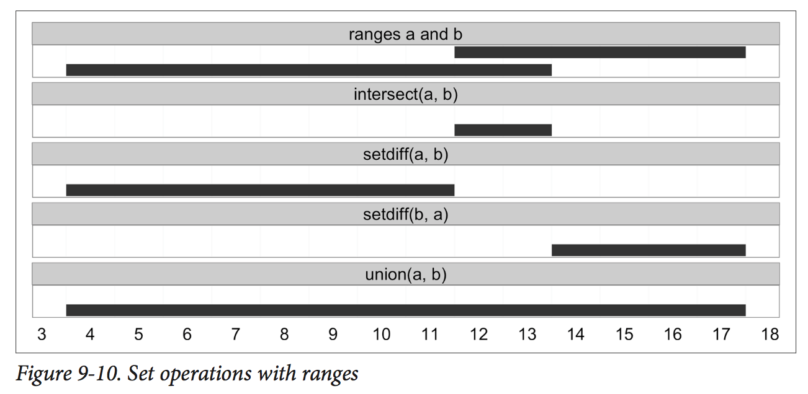</div> --- ### Finding Overlapping Ranges: -- * Up until now we have been manipulating ranges and creating new ranges based on relationships with existing ranges -- * In many genomic applications, we may need to explicitly map overlaps between subject and query sets of ranges -- * There are many ways to assess overlap between a subject and query and it is important to be aware of the details of any given approach -- Let's create subject and query IRange objects and assess overlap with the `findOverlaps()` function: ``` > qry <- IRanges(start=c(1, 26, 19, 11, 21, 7), end=c(16, 30, 19, 15, 24, 8), names=letters[1:6]) > sbj <- IRanges(start=c(1, 19, 10), end=c(5, 29, 16), names=letters[24:26]) ``` -- Inspect the objects we've just created --- Visually, these objects look like this: <div style="text-align:center">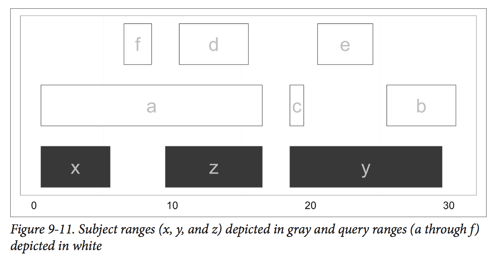</div> -- If we use the `findOverlaps()` function with these, we create an object of class "hits": ``` > hts <- findOverlaps(qry, sbj) ``` -- Inspect `hts` and see if you can understand its structure --- Essentially, `hts` shows a mapping of query (`qry`) to subject (`sbj`): <div style="text-align:center">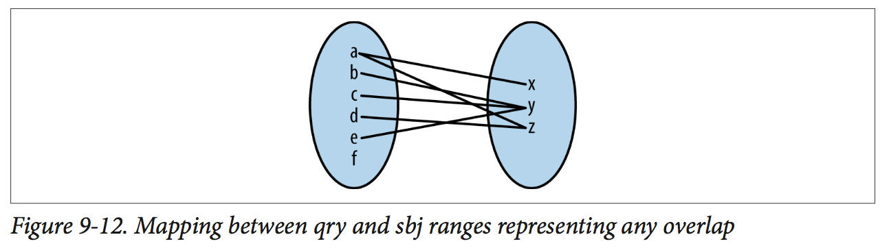</div> -- If we want to see the names of each of these hits, we can access them in this way: ``` > names(qry)[queryHits(hts)] > names(sbj)[subjectHits(hts)] ``` -- Based on Figure 9-11, how is `findOverlaps()` assessing overlap? -- Let's tweak how `findOverlaps()` identifies overlap with the `type` argument: ``` hts_within <- findOverlaps(qry, sbj, type="within") ``` -- What has changed? --- We can also limit our hits to a single match between subject and query using the argument `select` -- Try the following options for `select` and see if you can understand how `findOverlaps()` has changed: ``` > findOverlaps(qry, sbj, select="first") > findOverlaps(qry, sbj, select="last") > findOverlaps(qry, sbj, select="arbitrary") ``` -- While we are working with very small query and subject objects, imagine how computationally intensive this could become with larger data sets -- We can limit the amount of hits that have to be checked by creating an **"interval tree"** and not checking queries if their end points are smaller than a subject range's start point -- ``` > sbj_it <- IntervalTree(sbj) > class(sbj_it) > findOverlaps(qry, sbjit) ``` --- There is more we can do with the `hits` object as well -- Try the following functions and see if you can understand what each is doing: ``` > as.matrix(hts) > countQueryHits(hts) > setNames(countQueryHits(hts), names(qry)) > countSubjectHits(hts) > ranges(hts, qry, sbj) ``` -- <div style="text-align:center">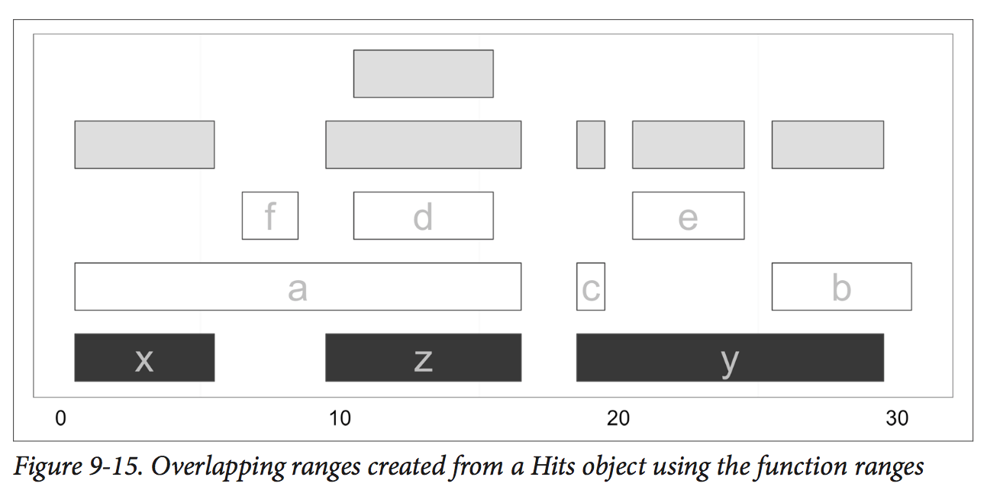</div> --- Additional overlap functions can also be applied to ranges. For example: ``` > countOverlaps(qry, sbj) > subsetByOverlaps(qry, sbj) ``` -- What are these doing? --- ### Finding Nearest Ranges and Calculating Distances: -- We can also use range functions to find subject ranges close to our query ranges -- For example, try the following: ``` > qry <- IRanges(start=6, end=13, name='query') > sbj <- IRanges(start=c(2, 4, 18, 19), end=c(4, 7, 21, 24), names=1:4) > nearest(qry, sbj) > precede(qry, sbj) > follow(qry, sbj) ``` -- We can also directly calculate the distance between query and subject ranges: ``` > qry <- IRanges(sample(seq_len(1000), 5), width=10) > sbj <- IRanges(sample(seq_len(1000), 5), width=10) > distanceToNearest(qry, sbj) > distance(qry, sbj) ``` --- ### Storing Genomic Ranges with GenomicRanges: GRanges are very similar to IRanges but include information on chromosome, strand, and, optionally, metadata -- Creation of GRanges is very similar to IRanges: ``` > library(GenomicRanges) > gr <- GRanges(seqname=c("chr1", "chr1", "chr2", "chr3"), ranges=IRanges(start=5:8, width=10), strand=c("+", "-", "-", "+")) > gr ``` -- And here with an example of metadata: ``` > gr <- GRanges(seqname=c("chr1", "chr1", "chr2", "chr3"), ranges=IRanges(start=5:8, width=10), strand=c("+", "-", "-", "+"), gc=round(runif(4), 3)) > gr ``` -- Essentially any type of data can be stored in metadata columns which is what makes GRanges so powerful --- We can also specify the lengths of each chromosome which are necessary for calculating coverage, gaps, etc... ``` > seqlens <- c(chr1=152, chr2=432, chr3=903) > gr <- GRanges(seqname=c("chr1", "chr1", "chr2", "chr3"), ranges=IRanges(start=5:8, width=10), strand=c("+", "-", "-", "+"), gc=round(runif(4), 3), seqlengths=seqlens) > gr ``` -- Like IRanges objects, we can use accessor functions to pull out specific types of data from Granges: ``` > start(gr) > end(gr) > width(gr) > seqnames(gr) > strand(gr) ``` --- Names can also be given to individual elements within a GRanges object: ``` > names(gr) <- letters[1:length(gr)] ``` -- And GRanges also supports subsetting and additional R functions: ``` > start(gr) > 7 > gr[start(gr) > 7] > table(seqnames(gr)) > gr[seqnames(gr) == "chr1"] ``` -- Finally, the `mcols()` function can be used to access metadata columns: ``` > mcols(gr) > mcols(gr)$gc ``` -- and can be combined with subsetting and other functions for advanced queries of data: ``` > mcols(gr[seqnames(gr) == "chr1"])$gc > mean(mcols(gr[seqnames(gr) == "chr1"])$gc) ``` --- ### Grouping Data with GRangesList: -- Very similar to the lists we learned about previously in R, GRanges has a data structure called `GRangesList` -- These can be built manually: ``` > gr1 <- GRanges(c("chr1", "chr2"), IRanges(start=c(32, 95), width=c(24, 123))) > gr2 <- GRanges(c("chr8", "chr2"), IRanges(start=c(27, 12), width=c(42, 34))) > grl <- GRangesList(gr1, gr2) ``` -- And behave very similarly to typical lists in R: ``` > unlist(grl) > doubled_grl <- c(grl, grl) ``` --- While above we've created GRangesLists manually, they are often produced by splitting GRanges: ``` > chrs <- c("chr3", "chr1", "chr2", "chr2", "chr3", "chr1") > gr <- GRanges(chrs, IRanges(sample(1:100, 6, replace=TRUE), width=sample(3:30, 6, replace=TRUE))) > gr > gr_split <- split(gr, seqnames(gr)) > gr_split[[1]] > gr_split[[2]] ``` -- Splitting GRanges into GRangesLists facilitates easier access to subsets of GRanges -- Splitting is also useful because we can then use `lapply` and `sapply` across individual elements of the list: ``` > lapply(gr_split, function(x) order(width(x))) > sapply(gr_split, function(x) min(start(x))) > sapply(gr_split, length) ``` --- ### Working with Annotation Data: GenomicFeatures and rtracklayer: -- * Now let's work with GRanges in the context of real data while learning a few new Bioconductor packages -- * `GenomicFeatures` is a package for creating and working with transcript-based annotations in the form of `TranscriptDb` objects. -- * `rtracklayer` is designed for importing and exporting annotation data into a variety of different formats -- First, let's install `GenomicFeatures`: ``` > library(BiocInstaller) > biocLite("GenomicFeatures") ``` -- And then, let's install an annotation package for the house mouse (_Mus musculus_): ``` > biocLite("TxDb.Mmusculus.UCSC.mm10.ensGene") > library(TxDb.Mmusculus.UCSC.mm10.ensGene) > txdb <- TxDb.Mmusculus.UCSC.mm10.ensGene ``` --- We've just built an SQLite database for _Mus musculus_ transcripts within R -- Various types of annotations can be extracted using accessor functions: ``` > genes(txdb) > transcripts(txdb) > exons(txdb) > promoters(txdb) ``` -- Inspect a few of these using `head(genes(txdb))` for example...what type of objects are produced? -- We can group these GRanges objects into GRangesLists using a number of different functions such as `transcriptsBy()`, `exonsBy()`, `cdsBy()`, `intronsBy()`, `fiveUTRsByTranscript()`, and `threeUTRsByTranscript()` -- For example: ``` > mm_exons_by_gn <- exonsBy(txdb, by="gene") ``` --- We can also control what portions of a genome are queried by limiting to a particular chromosome: ``` > seqlevels(txdb, force=TRUE) <- "chr1" > chr1_exons <- exonsBy(txdb, by="gene") > txdb <- restoreSeqlevels(txdb) # restore txdb so it queries all sequences ``` -- or by searching within a particular interval by using the "x"ByOverlaps family of functions: ``` > candidate_region <- GRanges("chr8", IRanges(123250562, 123567264)) > transcriptsByOverlaps(txdb, candidate_region) ``` -- While the `GenomicsFeatures` package and `transcriptDb` objects are straight-forward, convenient and consistent across genome versions and species, this comes at a cost to flexibility -- The `rtracklayer` package is not quite as user-friendly, but is more flexible --- Data can be imported and exported from/to a variety of formats using `rtracklayer` (_e.g.,_, GTF/GFF, BED, BED Graph, etc...) -- Imported data are converted into `GRanges` objects and missling data and metadata columns are automatically dealt with -- As an example, let's try importing a file from the GitHub repository of the Buffalo book: ``` > library(rtracklayer) > mm_gtf <- import('Mus_musculus.GRCm38.75_chr1.gtf.gz') > colnames(mcols(mm_gtf)) # metadata columns read in ``` -- `rtracklayer` has automatically detected the imported file type and has brought this in as a `GRanges` object --- We can also use `rtracklayer` to export subsets of the this data file to files of any format we choose: ``` > set.seed(0) > pseudogene_i <- which(mm_gtf$gene_biotype == "pseudogene" & mm_gtf$type == "gene") > pseudogene_sample <- sample(pseudogene_i, 5) > export(mm_gtf[pseudogene_sample], con="five_random_pseudogene.gtf", format="GTF") ``` --- ### Now let's try using these packages and the commands we've learned in an example: -- Let's first import a file with variants (SNPs, indels, etc...) from chr1 of _Mus musculus_: ``` > dbsnp137 <- import("mm10_snp137_chr1_trunc.bed.gz") ``` -- We want to find all variants within exons on this mouse chromosome. Let's first collapse all overlapping exons in the mouse `TranscriptDb` object we created earlier and create an object with only exons from chr1: ``` > collapsed_exons <- reduce(exons(txdb), ignore.strand=TRUE) > chr1_collapsed_exons <- collapsed_exons[seqnames(collapsed_exons) == "chr1"] ``` -- Before extracting variants in exons, let's first inspect our variant file: ``` > summary(width(dbsnp137)) ``` --- If a variant has a width of 0, we cannot find its overlap with exon ranges, so we must adjust its width to do this: ``` > dbsnp137_resized <- dbsnp137 > zw_i <- width(dbsnp137_resized) == 0 > dbsnp137_resized[zw_i] <- resize(dbsnp137_resized[zw_i], width=1) ``` -- We can now pull out those variants that overlap exons on chromosome 1 by creating a `hits` object: ``` > hits <- findOverlaps(dbsnp137_resized, chr1_collapsed_exons, ignore.strand=TRUE) ``` -- and determine the number of variants and the proportion of variants that are exonic: ``` > length(unique(queryHits(hits))) > length(unique(queryHits(hits)))/length(dbsnp137_resized) ``` --- We can also use the `countOverlaps()` function to find the number of variants per exon (note we have to reverse the order of the query since we're finding values per exon now) ``` > var_counts <- countOverlaps(chr1_collapsed_exons, dbsnp137_resized, ignore.strand=TRUE) ``` -- and we can append this to our `GRanges` object that includes exons: ``` > chr1_collapsed_exons$num_vars <- var_counts ```